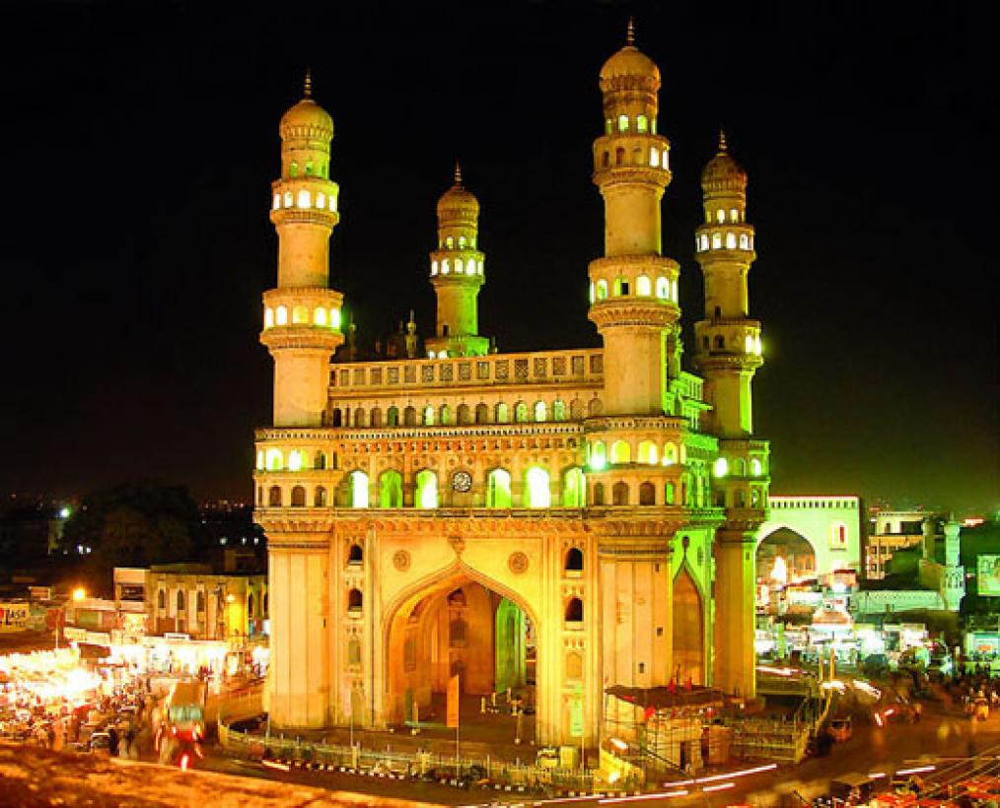

Historical Monument
★★★★★
Charminar
Built in 1591 by Muhammad Quli Qutb Shah to commemorate the founding of Hyderabad and to pray for an end to a deadly plague, Charminar is the iconic symbol of the city. The name literally means "Four Towers." The structure stands 56 metres tall with four ornate minarets. Its upper floor houses a mosque, and the archways open into the vibrant Laad Bazaar nearby.
Built In
1591 AD
Timings
9AM – 5:30PM
Entry Fee
₹25 (Indian) | ₹300 (Foreign)
Location
Old City, Hyderabad